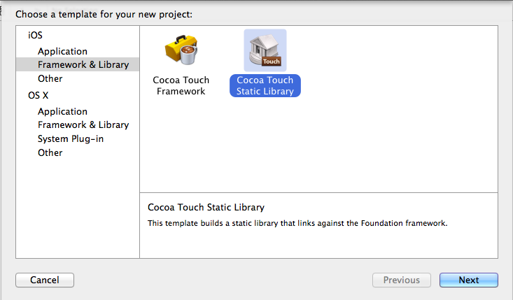

简介
最近需要用到Framework，在Xcode6上实践了一下，虽然制作原理没有变化，但在Xcode6中操作还是有一些不一样。我遇到的问题在raywenderlich上都有解决。
使用过第三方如统计之类工具的，对framework不会陌生。所以framework最大的一个好处就是提供接口但隐藏代码，在开发SDK过程中经常使用。
静态库模板
选择如下的静态模板创建工程，当然也可以在已有工程下创建新的target。这里可以看到Xcode6中新加了Cocoa Touch Framework，但是这里我们还是选择静态库模板。

添加文件
Framework本身包含库头文件和静态库，所以首先我们要把需要打包成framework的文件添加的工程，注意添加的时候确认target对象是否正确。接下来，查看文件引用了哪些系统库，在build phase->Link Binary With Libraries中将系统库添加进去，通常会添加Foundation或是UIKit库。然后添加相应的代码，添加的时候注意target是库对象。再在build phase->Headers中找到头文件，将需要设置为public的文件拖到Public一榄。
这时build一下，可以发现已经生成一个.a文件了。但此时还没有完成framework的制作：
1. 该静态库只包含一种架构
2. 头文件没有和库一起打包
借用 raywenderlich上的图来说明framework的组织结构：

生成Framework
接下来，我们给静态库添加执行脚本，内容如下：
set -e
export FRAMEWORK_LOCN="${BUILT_PRODUCTS_DIR}/${PRODUCT_NAME}.framework"
# Create the path to the real Headers die
mkdir -p "${FRAMEWORK_LOCN}/Versions/A/Headers"
# Create the required symlinks
/bin/ln -sfh A "${FRAMEWORK_LOCN}/Versions/Current"
/bin/ln -sfh Versions/Current/Headers "${FRAMEWORK_LOCN}/Headers"
/bin/ln -sfh "Versions/Current/${PRODUCT_NAME}" \
"${FRAMEWORK_LOCN}/${PRODUCT_NAME}"
# Copy the public headers into the framework
/bin/cp -a "${TARGET_BUILD_DIR}/${PUBLIC_HEADERS_FOLDER_PATH}/" \
"${FRAMEWORK_LOCN}/Versions/A/Headers"
接着创建一个Aggregate对象，然后给该对象也添加执行脚本，内容如下：
set -e
# If we're already inside this script then die
if [ -n "$RW_MULTIPLATFORM_BUILD_IN_PROGRESS" ]; then
exit 0
fi
export RW_MULTIPLATFORM_BUILD_IN_PROGRESS=1
RW_FRAMEWORK_NAME=${PROJECT_NAME}
RW_FRAMEWORK_NAME="PjsipFramework"
RW_INPUT_STATIC_LIB="lib${PROJECT_NAME}.a"
RW_INPUT_STATIC_LIB="libPjsipFramework.a"
RW_FRAMEWORK_LOCATION="${BUILT_PRODUCTS_DIR}/${RW_FRAMEWORK_NAME}.framework"
function build_static_library {
# Will rebuild the static library as specified
# build_static_library sdk
xcrun xcodebuild -project "${PROJECT_FILE_PATH}" \
-target "${TARGET_NAME}" \
-configuration "${CONFIGURATION}" \
-sdk "${1}" \
ONLY_ACTIVE_ARCH=NO \
BUILD_DIR="${BUILD_DIR}" \
OBJROOT="${OBJROOT}" \
BUILD_ROOT="${BUILD_ROOT}" \
SYMROOT="${SYMROOT}" $ACTION
}
function make_fat_library {
# Will smash 2 static libs together
# make_fat_library in1 in2 out
xcrun lipo -create "${1}" "${2}" -output "${3}"
}
# 1 - Extract the platform (iphoneos/iphonesimulator) from the SDK name
if [[ "$SDK_NAME" =~ ([A-Za-z]+) ]]; then
RW_SDK_PLATFORM=${BASH_REMATCH[1]}
else
echo "Could not find platform name from SDK_NAME: $SDK_NAME"
exit 1
fi
# 2 - Extract the version from the SDK
if [[ "$SDK_NAME" =~ ([0-9]+.*$) ]]; then
RW_SDK_VERSION=${BASH_REMATCH[1]}
else
echo "Could not find sdk version from SDK_NAME: $SDK_NAME"
exit 1
fi
# 3 - Determine the other platform
if [ "$RW_SDK_PLATFORM" == "iphoneos" ]; then
RW_OTHER_PLATFORM=iphonesimulator
else
RW_OTHER_PLATFORM=iphoneos
fi
# 4 - Find the build directory
if [[ "$BUILT_PRODUCTS_DIR" =~ (.*)$RW_SDK_PLATFORM$ ]]; then
RW_OTHER_BUILT_PRODUCTS_DIR="${BASH_REMATCH[1]}${RW_OTHER_PLATFORM}"
else
echo "Could not find other platform build directory."
exit 1
fi
# Build the other platform.
build_static_library "${RW_OTHER_PLATFORM}${RW_SDK_VERSION}"
# If we're currently building for iphonesimulator, then need to rebuild
# to ensure that we get both i386 and x86_64
if [ "$RW_SDK_PLATFORM" == "iphonesimulator" ]; then
build_static_library "${SDK_NAME}"
fi
# Join the 2 static libs into 1 and push into the .framework
make_fat_library "${BUILT_PRODUCTS_DIR}/${RW_INPUT_STATIC_LIB}" \
"${RW_OTHER_BUILT_PRODUCTS_DIR}/${RW_INPUT_STATIC_LIB}" \
"${RW_FRAMEWORK_LOCATION}/Versions/A/${RW_FRAMEWORK_NAME}"
# Ensure that the framework is present in both platform's build directories
cp -a "${RW_FRAMEWORK_LOCATION}/Versions/A/${RW_FRAMEWORK_NAME}" \
"${RW_OTHER_BUILT_PRODUCTS_DIR}/${RW_FRAMEWORK_NAME}.framework/Versions/A/${RW_FRAMEWORK_NAME}"
# Copy the framework to the user's desktop
ditto "${RW_FRAMEWORK_LOCATION}" "${HOME}/Desktop/${RW_FRAMEWORK_NAME}.framework"
脚本的内容不多说了，有解释。
接下来在Aggregate对象中的Target Dependencies中添加之前的静态库作为依赖。接着选择Aggregate对象，build一下，就可以生成所需的framework了。此脚本执行完后，framework会生成在用户桌面。使用xcrun lipo -info your.framework/Versions/A/customFramework 可以检测库是否包含多个架构。
framework的使用
新建一个工程，将上述framework添加到工程，在需要使用的地方添加如#import <YourFramework/PublicFile.h>，这样就可以使用了
其他问题
因为是创建一个framework给他人使用，以下设置最好留给使用framework的工程设置：
- Dead Code Stripping – NO
- Strip Debug Symbols During Copy – NO
- Strip Style – Non-Global Symbols
结束
以上是创建framework的记录总结，使用framework一点也不神秘，可以帮助我们更好的模块化工程，加深层次的设计和实践，从而提高开发的水平。